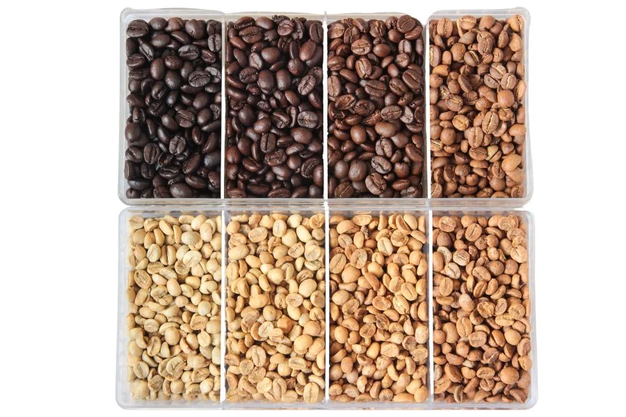
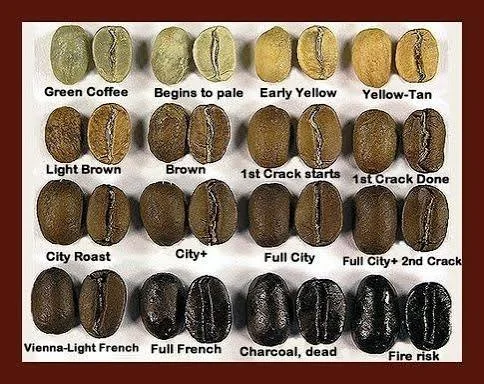
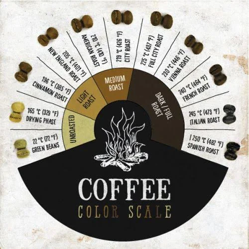
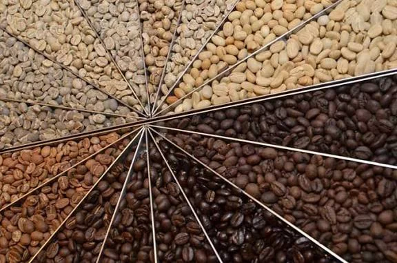

Cùng một loại nhân xanh, nhưng rang nhạt hay rang đậm sẽ cho ra hai ly cà phê hoàn toàn khác nhau. Mức độ rang quyết định độ chua, độ ngọt, độ đắng, body và mùi hương của tách cà phê. Bài viết này giải thích các mức rang theo nhiệt độ, dấu hiệu nhận biết trong lò rang và cách chọn mức rang đúng với cách pha.

Rang cà phê là gì?
Nhân cà phê xanh gần như không có mùi cà phê: hạt cứng, độ ẩm khoảng 10–12%, ngửi giống cỏ khô hay đậu sống. Quá trình rang dùng nhiệt để làm khô hạt, rồi kích hoạt hàng trăm phản ứng hóa học tạo nên hương vị. Trong lúc rang, hạt mất khoảng 12–20% khối lượng, nở to gần gấp đôi thể tích, chuyển màu từ xanh sang vàng, nâu rồi nâu đen.
Hai phản ứng quan trọng nhất là:
- Phản ứng Maillard (khoảng 150–200°C): đường và axit amin kết hợp, tạo màu nâu cùng mùi bánh mì nướng, hạt rang, sô-cô-la.
- Caramel hóa (từ khoảng 170°C trở lên): đường bị nhiệt phân, tạo vị ngọt caramel. Rang càng lâu, đường bị "đốt" càng nhiều, ngọt giảm và đắng tăng.
Các giai đoạn trong một mẻ rang


- Giai đoạn sấy (Drying, đến khoảng 160–165°C): hạt mất nước, chuyển từ xanh sang vàng nhạt, mùi cỏ khô.
- Chuyển vàng (Yellowing / Yellow-Tan): mùi bánh mì, ngũ cốc rang. Bắt đầu phản ứng Maillard.
- Chuyển nâu (Light Brown – Brown): hơi nước và khí CO₂ tích tụ trong hạt, áp suất tăng dần.
- Crack 1 (First Crack, khoảng 196–205°C): hạt nứt "lách tách" như bỏng ngô, vết rãnh giữa hạt mở ra. Từ đây hạt bắt đầu "uống được".
- Giai đoạn phát triển (Development): khoảng thời gian sau crack 1. Người rang kéo dài hay rút ngắn giai đoạn này để chỉnh độ ngọt và độ cân bằng.
- Crack 2 (Second Crack, khoảng 224–230°C): tiếng nứt nhỏ, giòn, dồn dập hơn. Cấu trúc hạt bắt đầu vỡ, dầu bắt đầu lộ ra bề mặt.
- Quá mức (Charcoal / Fire risk, từ khoảng 250°C): hạt đen bóng dầu, vị khét, tro. Đây là mức hỏng, có nguy cơ bắt lửa trong lò.
Bảng các mức độ rang theo nhiệt độ
Nhiệt độ dưới đây là nhiệt độ hạt (bean temperature) tham khảo khi kết thúc mẻ rang. Con số thực tế có thể lệch vài độ tùy loại lò, vị trí đầu dò và độ ẩm của nhân.
| Nhóm | Tên mức rang | Nhiệt độ hạt | Mốc trong lò | Màu & bề mặt hạt |
|---|---|---|---|---|
| Light | Cinnamon | ~196°C | Bắt đầu crack 1 | Nâu quế nhạt, khô, không dầu |
| New England | ~205°C | Giữa crack 1 | Nâu nhạt, khô | |
| American | ~210°C | Kết thúc crack 1 | Nâu vừa nhạt, khô | |
| Medium | City | ~219°C | Sau crack 1 | Nâu đều, khô |
| Full City | ~225°C | Sát crack 2 | Nâu đậm, có thể lấm tấm dầu | |
| Dark | Vienna | ~230°C | Đầu crack 2 | Nâu sô-cô-la, bóng dầu nhẹ |
| French | ~240°C | Giữa crack 2 | Nâu đen, bóng dầu | |
| Italian | ~245°C | Cuối crack 2 | Đen nâu, nhiều dầu | |
| Spanish | ~250°C | Sau crack 2 | Gần đen, rất nhiều dầu |
Hương vị thay đổi thế nào theo mức rang?

Rang nhạt (Light roast)
Giữ được nhiều đặc tính của vùng trồng và giống cà phê: chua thanh rõ, hương hoa, trái cây, trà; body mỏng, gần như không đắng. Hợp với Arabica chất lượng cao pha pour-over. Nếu phát triển chưa đủ, ly cà phê dễ bị chua gắt, ngái, mùi ngũ cốc sống.
Rang vừa (Medium roast)
Cân bằng giữa chua và ngọt: hương caramel, sô-cô-la sữa, các loại hạt; body vừa, hậu ngọt rõ. Đây là mức rang đa dụng nhất, hợp với nhiều cách pha và dễ được đa số khách hàng chấp nhận.
Rang đậm (Dark roast)
Chua giảm hẳn, đắng tăng; hương sô-cô-la đen, ca cao, đường cháy, khói; body dày. Hương vùng trồng mờ dần, vị chủ yếu đến từ quá trình rang. Rất hợp pha phin, cà phê sữa đá và espresso cho đồ uống có sữa.
| Tiêu chí | Light | Medium | Dark |
|---|---|---|---|
| Độ chua | Cao, sáng | Vừa, tròn | Thấp |
| Độ ngọt | Ngọt trái cây | Ngọt caramel cao nhất | Ngọt giảm, thay bằng đắng |
| Độ đắng | Rất nhẹ | Nhẹ – vừa | Rõ |
| Body | Mỏng | Vừa | Dày |
| Hương chính | Hoa, trái cây, trà | Caramel, hạt, sô-cô-la sữa | Sô-cô-la đen, ca cao, khói |
| Dầu trên hạt | Không | Không hoặc rất ít | Có, bóng dầu |
| Cách pha hợp | Pour-over, cold brew | Phin, máy, pour-over | Phin, espresso, sữa đá |
Rang Robusta và Arabica khác nhau thế nào?
- Arabica: nhiều đường và axit hữu cơ, hương phức tạp. Thường rang Light đến Medium để giữ vị chua thanh và hương đặc trưng vùng trồng như Cầu Đất, Lạc Dương.
- Robusta: ít đường, nhiều caffeine, vị đắng và mùi gỗ, ngũ cốc rõ. Thường rang Medium-dark đến Dark để giảm mùi ngái, tạo body dày và hậu ngọt. Robusta chất lượng cao (Honey, Fine Robusta) có thể rang Medium để lộ hương hạt điều, ca cao, mật ong.
- Phối trộn (blend): hai loại nên rang tách riêng theo đúng mức của từng loại rồi mới phối. Rang chung một mẻ thường làm Arabica bị cháy trong khi Robusta chưa chín.
Chọn mức rang theo cách pha
| Cách pha | Mức rang nên chọn | Lý do | Gợi ý tại CAFEROA |
|---|---|---|---|
| Phin, cà phê sữa đá | Medium-dark → Dark | Ngâm lâu, cần body dày, đứng vị với sữa đặc | Phin Truyền Thống, Phin Blend |
| Espresso, latte, cappuccino | Medium → Medium-dark | Chiết nhanh, cần crema dày, cân bằng chua – đắng | Espresso Signature |
| Pour-over, V60 | Light → Medium | Làm nổi hương và độ chua thanh | Gold Reserve (Arabica) |
| Cold brew | Medium | Ủ lạnh lâu, vị ngọt tròn, ít đắng | Specialty Robusta |
| Dùng chung nhiều cách pha | Medium-dark | Ổn định, dễ pha, hợp quán và văn phòng | Signature Roasted Beans |
Cách nhận biết cà phê rang đúng và rang lỗi
- Màu đều: hạt trong cùng mẻ có màu đồng nhất, mặt ngoài và lõi không chênh lệch nhiều. Bẻ đôi hạt thấy lõi nâu, không trắng hoặc xanh.
- Không cháy xém: hạt không có đốm đen ở hai đầu hay mặt phẳng, dấu hiệu nhiệt quá cao lúc đầu mẻ.
- Mùi: thơm caramel, sô-cô-la, hạt rang. Mùi khét, tro là rang quá. Mùi cỏ, đậu sống là rang non.
- Không tẩm ướp: cà phê rang mộc không bóng nhờn khi mới rang ở mức Medium, không có mùi bơ, vani hay hương liệu nhân tạo, không dính tay.
Mức rang của các dòng cà phê CAFEROA
CAFEROA rang theo từng mẻ nhỏ bằng công nghệ khí nóng đối lưu (Hot Air), giúp hạt chín đều từ trong ra ngoài, hạn chế cháy xém bề mặt. Mỗi dòng sản phẩm được rang ở mức phù hợp nhất với giống hạt và cách pha:
- Medium: Gold Reserve (100% Arabica Cầu Đất – Lạc Dương), Specialty Robusta (Bảo Lộc).
- Medium-dark: Espresso Signature, Signature Roasted Beans.
- Dark: Phin Truyền Thống (Robusta Cư M'gar), Phin Blend (Robusta sẻ Di Linh).
Cần tư vấn mức rang cho quán?
CAFEROA pha thử miễn phí và rang theo đúng khẩu vị khách của quán bạn.
Câu hỏi thường gặp
Mức rang nào hợp pha phin?
Pha phin hợp với mức rang Medium-dark đến Dark (Full City – Vienna), cho ly cà phê đậm, body dày, hậu ngọt, đứng vị khi pha cùng sữa đặc.
Rang càng đậm thì càng nhiều caffeine?
Không. Caffeine khá bền nhiệt nên lượng caffeine gần như không đổi theo mức rang. Cảm giác đậm, đắng hơn đến từ các hợp chất tạo ra khi rang lâu, không phải do caffeine tăng.
Cà phê rang xong nên dùng khi nào?
Nên để hạt nghỉ 3–7 ngày cho thoát bớt CO₂, ngon nhất trong khoảng 4–6 tuần sau ngày rang nếu được bảo quản kín, khô, tránh nắng.
Nhiệt độ trong bài là nhiệt độ hạt tham khảo theo thang màu rang phổ biến (Coffee Color Scale) và có thể chênh lệch tùy loại lò rang. Bài viết bởi CAFEROA.